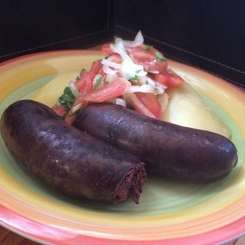

Prietas

Description
In Chile, the blood sausage is called "prieta" (a synonym of "negra", black) and tends to have a very
thick skin, so is eaten cut open lengthwise. Apart from blood and a little fat, "prietas" may contain
a variety of ingredients, such as chopped onion and spices, cabbage, peppers, watercress, rice, meat
or even dried fruit or nuts. "Prietas" or "morcillas" are part of the Chilote tradition of "reitimiento"
involving the slaughter and preparation of a pig.
Ingredients
- ¼ cup duck fat or lard/li>
- 2 cups finely chopped sweet onions (about 2 medium onions)
- 10 garlic cloves, minced
- 2 tablespoons Spanish paprika
- 1 teaspoon kosher salt
- 1 teaspoon ground cloves
- 4 cups cooked long-grain white rice (preferably a day old)
- 1 pounds pork belly, trimmed and cut into 1/8- to 1/4-inch cubes
- 6 cups strained pork blood
- 12 ft. hog casings
- 1 tablespoons olive oil
Steps
- Melt duck fat in a cast-iron skillet over medium-high. Add onions and garlic, and cook, stirring often, until lightly caramelized,
8 to10 minutes. Reduce heat to medium-low; add paprika, salt, and cloves, and cook, stirring often, until rust color and very tender,
8 to 10 minutes. Remove mixture from skillet, and cool completely, about 20 minutes.
- Combine onion mixture, rice, and pork belly in a bowl. Pour pork blood over pork belly mixture, and stir until well combined.
- Cut casings into 6 (2-foot-long) sections. Run water through each section, making sure there are no tangles or holes. Tie a knot
in 1 end of each casing section. Attach opposite end to the spout (at least 1/4-inch in diameter) of a funnel. Divide pork belly
mixture into 6 equal portions. Spoon 1 portion pork mixture into funnel; use the handle of a wooden spoon to plunge pork belly mixture
into casing, ensuring it goes through spout into casing. Repeat process with remaining casing sections and pork belly mixture.
- Bring a large pot of water to a simmer with a temperature of 160°F. (It is important to maintain a water temperature of 160°F.
If it goes above 170°F, the blood will curdle when cooked.) Carefully add sausages to water, in batches if necessary, and cook without
disturbing 15 minutes. Remove sausages; roll into a coil on a large platter or baking sheet, and refrigerate, uncovered, 8 hours or
overnight to set.
- Slice sausages crosswise into 1/2-inch-thick rounds. Heat oil in a cast-iron or nonstick skillet over medium-high; add sausage
rounds, and cook until browned and warmed through, about 3 minutes per side.